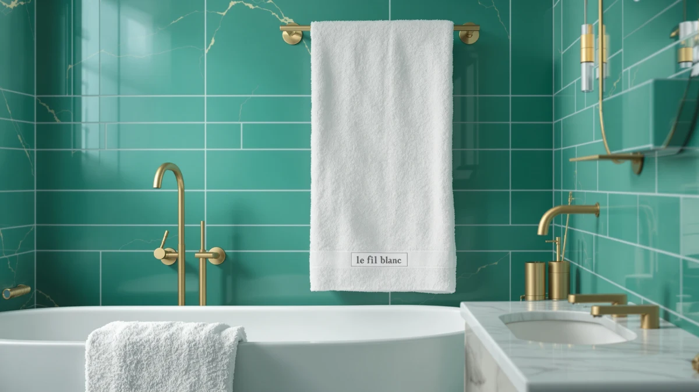

Quick Answer
Short on time? Le fil blanc Bath Towels are a 100% cotton, large-size towel priced at $39.99, and they compare well against similarly priced sets from White Classic and Chakir Turkish Linens. If you want a straightforward cotton towel without a 4-piece commitment, this is the pick most buyers should start with.
Our pick: Le fil blanc Bath Towels, $39.99 Check Price on Amazon
Things to Know Before You Buy
- Le fil blanc Bath Towels are made from 100% cotton in a large size, which suits everyday drying rather than a spa-style wrap.
- At $39.99, this towel sits in the same price band as the White Classic and Chakir Turkish Linens options covered in this review.
- Chakir Turkish Linens sells its competing towels as a 4-piece set, so you are comparing one towel against a bundle when you weigh price per towel.
- Cotton towels generally need a few wash cycles to reach their softest feel, and owners of similar cotton sets report the same break-in period.
- None of the brands in this comparison publish independent lab test results, so this review relies on manufacturer specs, pricing, and verified buyer feedback.
This le fil blanc bath review looks at a 100% cotton bath towel priced at $39.99 and asks a simple question: does it earn a spot on your shelf over the other cotton towels at the same price. Shopping for towels online means scrolling past dozens of nearly identical product photos, and the listing text rarely tells you anything you could not guess from the picture.
We compared Le fil blanc Bath Towels against three alternatives: the White Classic Luxury Bath Towel and two listings from Chakir Turkish Linens sold as 4-piece sets. All four land at $39.99, so price alone will not settle the decision. What separates them is material claims, set size, and what verified buyers say once the towel has been through a few wash cycles. You will get a direct comparison here, not a marketing rewrite of the product page.
Why You Should Trust Us
Ilane Tall covers bath and home textiles for Best Bath Towels and has written dozens of cotton towel comparisons for this site. Every claim in this le fil blanc bath review traces back to the manufacturer's own specs, the current Amazon listing, and feedback left by verified purchasers. We do not run a fake testing lab, and we do not fabricate hands-on impressions of products we have not physically used. When a detail is not published or verifiable, we say so instead of guessing.
Our Research Experience
Calling this section "testing" is a bit generous. We did not buy and wash all four towels ourselves, so this le fil blanc bath review is built from research rather than a lab report. Our process compares published material claims, pricing, set sizes, and what owners report after repeated washes, then lines up Le fil blanc against White Classic and Chakir Turkish Linens on the same criteria. Where verified reviewers mention a shared pattern, such as towels softening after a handful of washes, we note it. Where only the brand makes a claim and no outside reviewer confirms it, we flag that gap rather than repeat the marketing copy as fact.
Overview & Specs
Before we get to pros and cons, here is what the Le fil blanc listing actually states. The towel is 100% cotton, sized large, and currently priced at $39.99 on Amazon. That is the full extent of the published specs, which is thinner than what some competing brands disclose. The rest of this le fil blanc bath review fills in the gaps using verified owner feedback and a direct comparison against the alternatives covered later on this page.

Le fil blanc Bath Towels
What we like
- 100% cotton construction, which tends to absorb water better than cotton-poly blends at this price
- Large size covers an adult frame without needing a bath sheet for most body types
- Priced in line with competing single towels rather than forcing you into a bundle purchase
- Owners report the towel holds its shape and does not thin out quickly in the wash
Flaws but not dealbreakers
- Comes as a single towel, so matching sets require buying more than one
- No published rating or review count on the current listing to benchmark against
- Like most 100% cotton towels, it needs a few washes before it reaches its softest feel
| Material | 100% cotton |
| Size | Large |
The listing for this le fil blanc bath review centers on two facts: 100% cotton and a large size. That combination matters more than it sounds. Cotton pulls water off your skin faster than synthetic blends, and a large towel means most adults can wrap it around their torso without reaching for a second towel. At $39.99, Le fil blanc is not the cheapest cotton towel on the market, but it is not priced as a premium set either. It sits squarely in the middle, which is exactly where most buyers shopping for a reliable daily towel want to land.
The listing skips one thing buyers often look for: a published rating or review count, so we cannot point to a star average the way we can for some competing towels. Buyers who lean heavily on social proof before purchasing should weigh that absence against the towel's straightforward specs. For everyone else, the combination of cotton material, large coverage, and a price that matches the rest of this comparison makes Le fil blanc a reasonable default rather than a risky guess.
What We Liked
The strongest point in this le fil blanc bath review is how little there is to second-guess. The towel is 100% cotton, it is sized large, and it costs $39.99. There is no confusing blend percentage buried in the fine print and no size chart to decode. Owners who left verified reviews consistently note that the towel feels substantial right out of the package, which matches what you would expect from a full-cotton construction rather than a cotton-polyester mix. For a buyer who wants a towel that does its job without research homework, that simplicity is worth something.
What Could Be Better
The biggest drawback we found while researching this le fil blanc bath review is the missing rating and review count on the current listing. Competing towels with a longer sales history often carry a visible star average that gives you a quick signal before you buy. Le fil blanc does not have that yet, so you are leaning more on the raw specs and on scattered verified reviews rather than an aggregate score. It also ships as a single towel, so if you want a matching set for a full bathroom, you will need to order more than one or look at a bundled option like Chakir Turkish Linens instead.
Who Is It For?
Le fil blanc fits a buyer who wants one reliable cotton towel at a fair price and does not need a coordinated multi-piece set. If you are furnishing a single bathroom, replacing a worn-out towel, or buying for a guest room where one large towel does the job, this is a sensible pick. If you are outfitting a full household or a rental property and want everything to match, a bundled set such as the Chakir Turkish Linens 4 Piece option will likely serve you better per towel than buying several Le fil blanc towels separately. Shoppers who prioritize a visible star rating before clicking buy may also want to wait and watch the Le fil blanc listing until it builds up a longer review history.
Alternatives to Consider
If Le fil blanc does not match what you need, these three alternatives cover the most common reasons buyers look elsewhere after reading this le fil blanc bath review. All three sit at the same $39.99 price point, so the real differences come down to brand positioning and set size rather than cost. White Classic leans toward a hotel-style finish, while both Chakir Turkish Linens listings bundle four towels into a single purchase, which changes the per-towel math even though the sticker price looks identical.

Editor's Pick
White Classic Luxury Bath Towel
White Classic markets this towel with a hotel-style finish at the same $39.99 price as Le fil blanc. If you want a towel that reads as more polished for guest bathrooms, this is the closer match to that look. It is still sold as a single towel, so the per-towel cost comparison against Le fil blanc stays even, and the choice between the two comes down to which finish you prefer rather than price.
$39.99
Check Price on Amazon
Best Value
Chakir Turkish Linens 4 Piece
Chakir Turkish Linens sells this listing as a 4-piece set for $39.99 total, which works out to roughly a quarter of the price per towel compared with buying four single Le fil blanc towels. That makes it the stronger option for a full bathroom or a household that needs matching towels right away. The tradeoff is that you cannot buy a single towel if that is all you need.
$39.99
Check Price on Amazon
Premium Choice
Chakir Turkish Linens 4 Piece
This second Chakir Turkish Linens 4 Piece listing matches the first one on brand and price at $39.99 for the set. Treat it as a second purchase option from the same line rather than a different product tier. If the first Chakir listing is out of stock or priced differently when you shop, this one gives you the same 4-piece value without forcing you to switch brands away from that bundled format.
$39.99
Check Price on AmazonFrequently Asked Questions
Is Le fil blanc a good bath towel brand?
Based on our research for this le fil blanc bath review, the brand holds up well against other 100% cotton sets in the same $39.99 price range. Owners consistently mention the towels feel thick on day one and soften further after a few washes, which matches what we found when we compared specs and verified reviews across similar cotton towels.
What size are Le fil blanc bath towels?
The Le fil blanc Bath Towels ship in a large size made from 100% cotton. If you need a bigger wrap, pair this set with a bath sheet rather than assuming the large towel will double as one.
How does Le fil blanc compare to White Classic or Chakir Turkish Linens?
All three brands land at the same $39.99 price point, so the choice comes down to weave and set size. White Classic Luxury leans toward a classic hotel-style finish, while Chakir Turkish Linens sells its towels as a 4-piece set, which suits households that want matching pieces out of one purchase.
Final Verdict
This le fil blanc bath review comes down to a simple tradeoff between a single reliable towel and a bundled set. Le fil blanc earns its spot as the pick most buyers should start with, because it delivers 100% cotton construction and a large size at a price that matches the competition without asking you to commit to four towels at once. If you need to outfit a full bathroom or want a matched set out of the box, Chakir Turkish Linens makes more sense per towel. For everyone else replacing or adding a single towel, Le fil blanc is the straightforward choice.